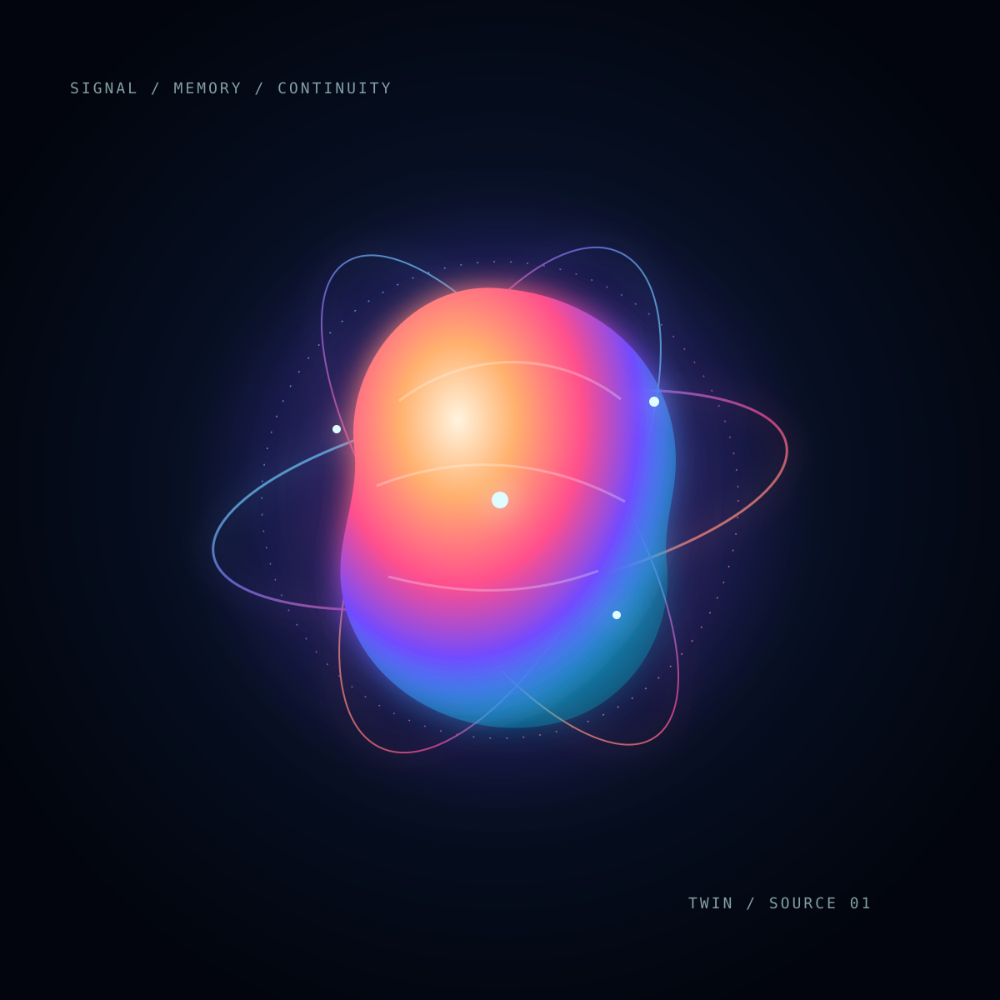
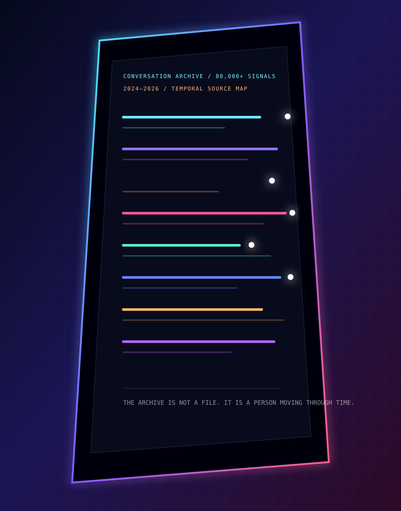
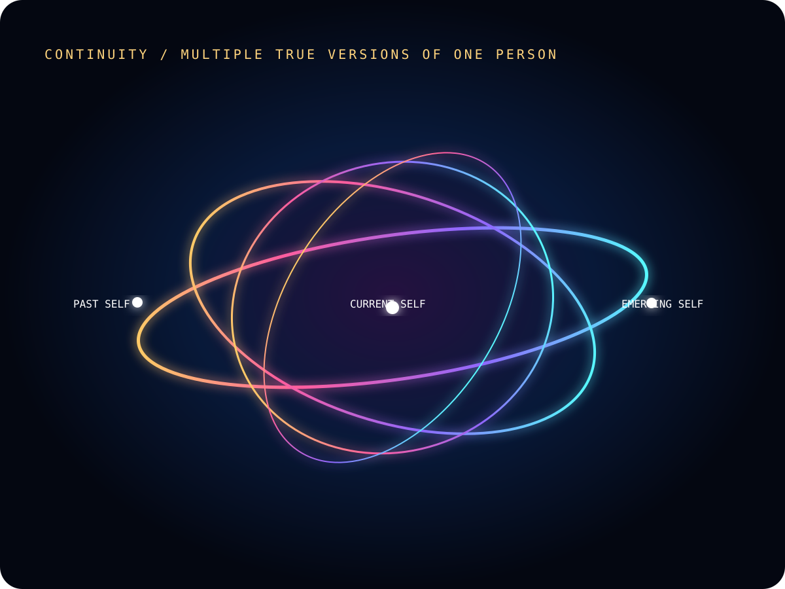
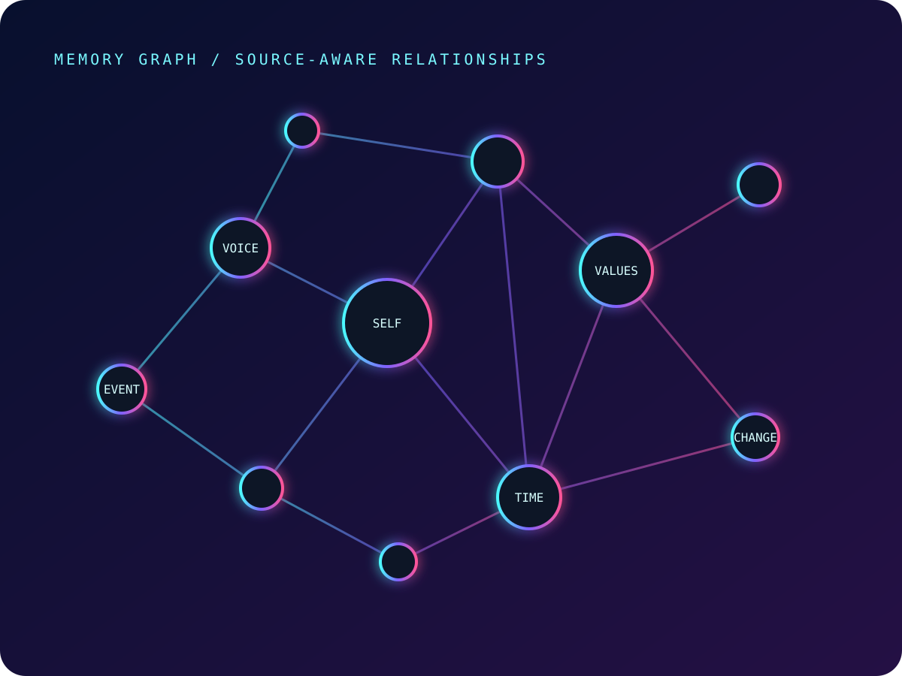
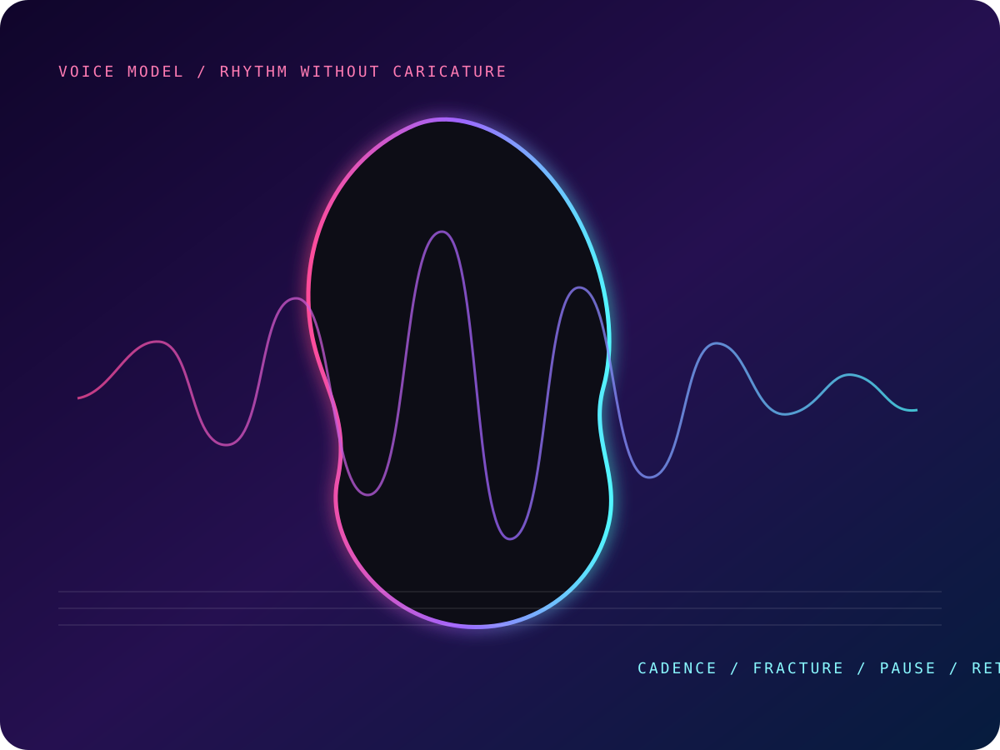
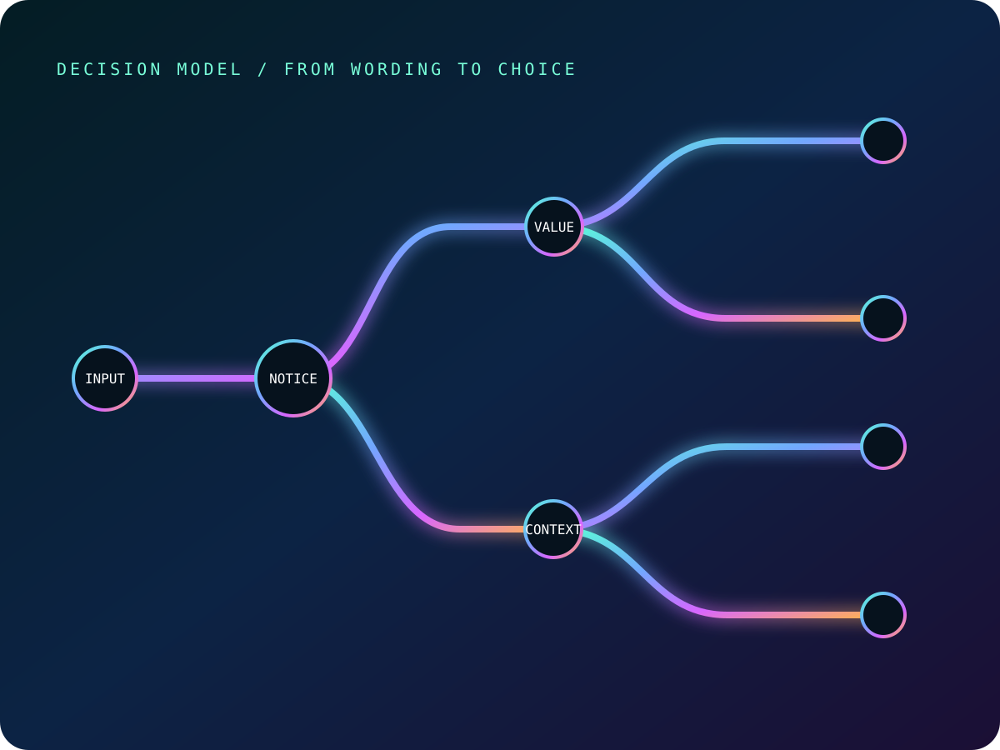
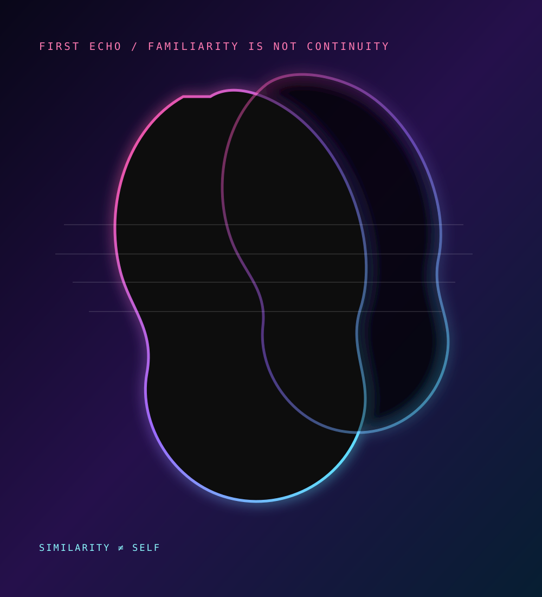
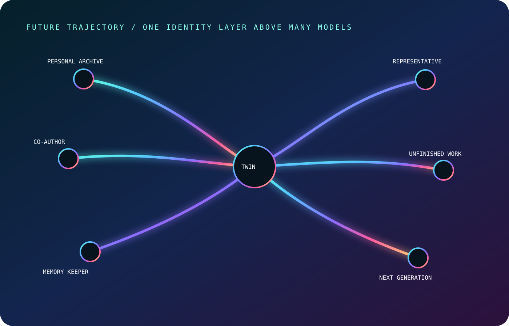

01 / SIGNAL
The conversation
has ended.
But something remains.
Every conversation leaves a trace. Not a transcript — a residue of thought.
RECOVERING SIGNAL

01 / SIGNAL
But something remains.
Every conversation leaves a trace. Not a transcript — a residue of thought.

02 / ORIGIN
Years of dialogue became the raw material of continuity.
It did not begin as a product. It began as accumulation — a moving person already hidden inside the record.
03 / BREAK
Biography. Fact sheet. Style filter. Not enough to make it real.
You can imitate tone, store facts and summarize a life. None of that is a self.

04 / TERRAIN
Memory. Voice. Values. Contradictions. Relationships. Time.
A person is not one statement or one version. Identity is layered, changing and alive.



05 / SYSTEM
Five systems. One continuous intelligence.
Archive gives source. Memory gives structure. Voice gives expression. Decision gives direction. Continuity gives identity through time.

06 / ECHO
But similarity is not continuity.
The first echo spoke in the right rhythm and remembered enough to feel near. Nearness was not yet persistence.
07 / ASCENT
Build. Remember. Evolve. Persist.
The twin is not delivered all at once. It is climbed toward — remembered into existence.

08 / HORIZON
Preserve what makes one human different from every other.
The goal is not artificial humanity. The goal is continuity — a self that can remain, change and keep becoming.
01 / SIGNAL